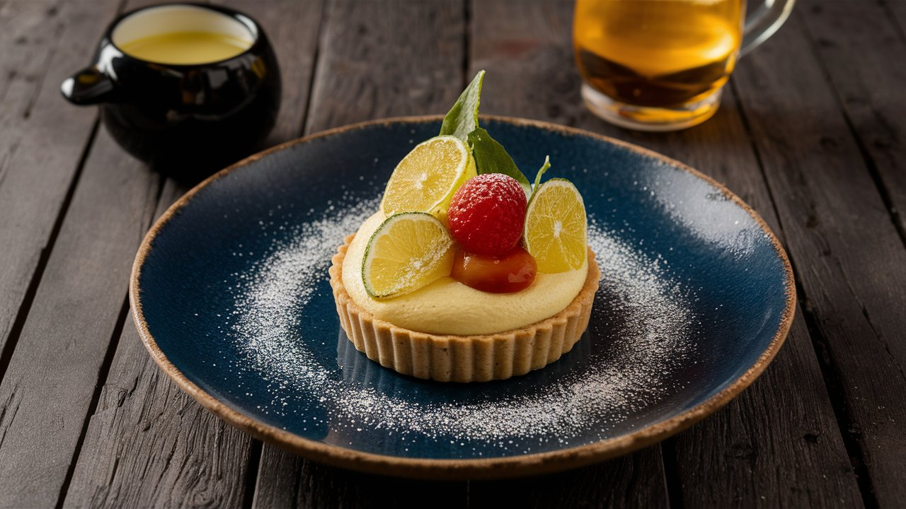
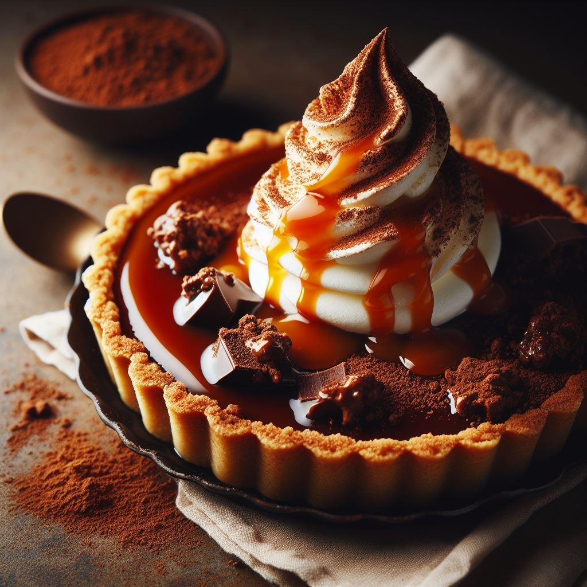

SOBREMESAS

Um delicioso corte de Torta de chocolate belga, feita com cacau de alta qualidade, coberto com raspas de chocolate meio amargo e acompanhado de uma bola de sorvete de baunilha artesanal, de cor branca pura, em um prato de porcelana preta.
Uma Tartelette de limão delicadamente equilibrada, com um recheio de creme de limão fresco e decorada com raspas de limão siciliano e uma pitada de açúcar de confeiteiro.

Crème Brûlée de Lavanda um clássico francês com um toque sofisticado de lavanda, apresentando uma textura cremosa e sutil aroma floral, finalizado com uma fina camada de açúcar caramelizado.

Torta de chocolate com calda de caramelo - Começamos com uma base crocante e irresistível. Trituramos biscoitos de chocolate até obtermos uma textura fina e misturamos com manteiga derretida. preparamos um caramelo dourado e sedoso. O açúcar é derretido até atingir uma cor âmbar, e então adicionamos creme de leite fresco e uma pitada de flor de sal. Nossa ganache é feita com chocolate amargo picado e creme de leite fresco. O chocolate é derretido e misturado com o creme até obtermos uma textura lisa e brilhante.

Mousse de Maracujá - Nosso mousse de maracujá é uma combinação perfeita de suavidade e acidez. A textura é leve e aerada, derretendo na boca como um abraço tropical. Utilizamos suco de maracujá fresco para criar a base do mousse. A acidez característica da fruta é equilibrada com o doce do leite condensado e do creme de leite.